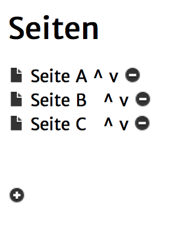

Mit dieser Aktion ist es möglich, die Seite aufzurufen, die in der Seitenliste als letztes kommt.

Wenn du diese Aktion also z.B. in Seite A, B oder C benutzt, würde in jedem Fall Seite C aufgerufen.
Für diese Aktion gibt es keine Einstellungsmöglichkeiten.